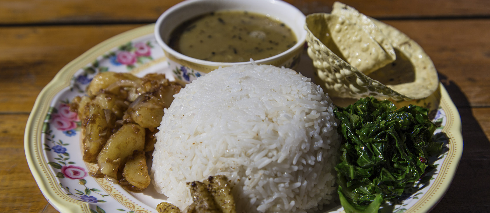

Dal Bhat - The Famous Staple Food of Nepal

Corresponding to the diverse nature of Nepalese cuisine, which includes a wide range of dishes based on ethnicity, soil, and climate, the Nepali diaspora offers a broad array of delicious delicacies, all of which are related to Nepal’s cultural diversity and geography.
Among the many, Dal Bhat Tarkari is perhaps the most popular dish in Nepal. Why is Dal Bhat Tarkari so popular? Its simple nature, easy-to-prepare facet, and nutritional value make it one of the staple dishes of Nepal.
Despite its relatively uncomplicated disposition, the cuisine is a must for any connoisseurs looking for an exquisite and delicious experience. Its status as a beloved National Cuisine of this country also makes it a must-try when visiting the country.
Dal bhat—otherwise known as khana, or “food”—is more than just a national dish. It’s what most Nepalis eat twice a day, every day. At its simplest, dal bhat is just lentil curry and rice. But you’ll usually find it served with a selection of seasonal vegetable curries, a meat curry (chicken, mutton, or buffalo are most popular), pickles (such as tomato pickle, made from fresh, uncooked tomato pounded together with garlic and chili), a papad, and sometimes a curd and slightly sweet item, such as sel roti. The lentil curry served varies throughout the country; in Kathmandu, the favored type is a thick curry made from black lentils that takes on a creamy consistency when cooking, despite the lack of actual cream (unlike many Indian curries, for example). While Nepalis at home typically eat a meal of dal bhat in the mid-morning and again in the evening, you can buy it in restaurants at regular lunch and dinner hours. It’s healthy, filling, tasty, and often comes in unlimited quantities.To Watch Full Recipe Click to Dal Bhat full recipe